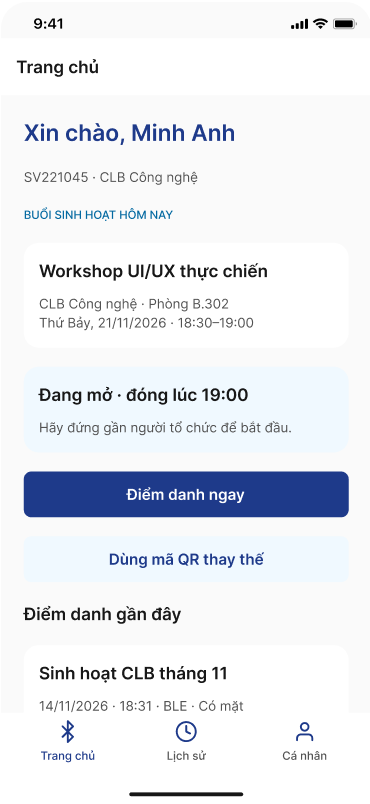
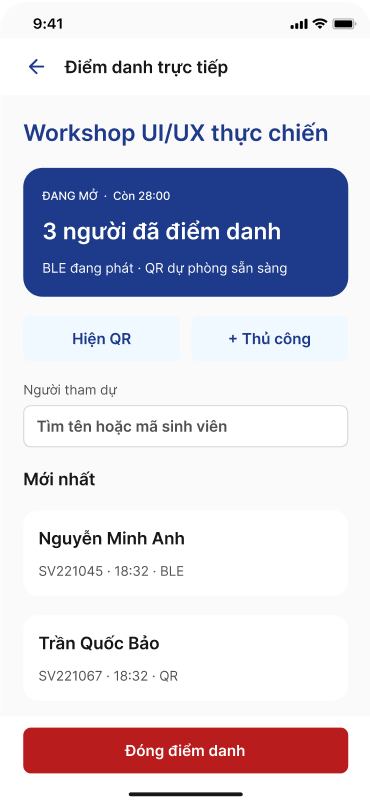
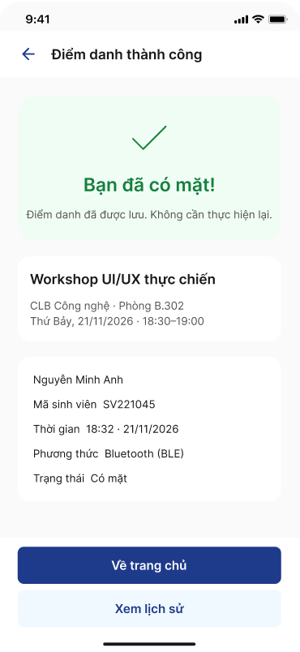

Một lần chạm.
Một lần có mặt.
Xác nhận hiện diện bằng Bluetooth, QR khi cần. Danh sách điểm danh rõ ràng cho mỗi buổi sinh hoạt của câu lạc bộ.



Điểm danh ở CLB vẫn đang mất thời gian
Gọi tên, chuyền giấy hay dán link form đều làm gián đoạn buổi sinh hoạt, và ban tổ chức phải tự tổng hợp danh sách sau đó.
Chậm và gián đoạn
Điểm danh thủ công chiếm đầu buổi, nhất là khi CLB đông người.
Khó kiểm chứng
Danh sách giấy hay form từ xa không cho biết ai thực sự có mặt tại phòng.
Tổng hợp rời rạc
Dữ liệu nằm ở nhiều nơi, khó xem lại lịch sử tham gia của từng thành viên.
Dành cho ai
Sinh viên tham gia CLB
Muốn điểm danh nhanh, không phải xếp hàng hay nhập tay, và xem lại các buổi mình đã tham dự.
Ban tổ chức / chủ nhiệm CLB
Cần mở phiên nhanh, theo dõi trực tiếp ai đã có mặt và xuất danh sách khi kết thúc.
Bluetooth trước, QR khi cần
Người tổ chức mở phiên, điện thoại phát tín hiệu Bluetooth trong phòng. Sinh viên ở gần được nhận diện mà không cần thao tác phức tạp. Nếu Bluetooth không dùng được, mã QR là phương án dự phòng.
Cách hoạt động
Tạo hoặc tham gia CLB
Chủ nhiệm tạo CLB và chia sẻ mã tham gia.
Mở phiên
Điện thoại bắt đầu phát tín hiệu và hiện mã QR dự phòng.
Điểm danh
Sinh viên đứng gần để tự nhận diện, hoặc quét mã QR.
Đóng phiên và xuất CSV
Xem danh sách theo thời gian thực, đóng phiên và xuất báo cáo.
Đủ cho một buổi sinh hoạt, không thừa
Phạm vi MVP tập trung vào vòng lặp tạo CLB, mở phiên, điểm danh, xem lịch sử và xuất báo cáo.
Điểm danh bằng Bluetooth
Nhận diện thiết bị ở gần người tổ chức, tự động ghi nhận.
QR dự phòng
Dùng khi Bluetooth bị tắt, thiết bị không hỗ trợ hoặc chưa cấp quyền.
Theo dõi trực tiếp
Người tổ chức thấy danh sách người có mặt cập nhật theo thời gian thực.
Lịch sử điểm danh
Sinh viên xem lại các buổi đã tham dự, kèm phương thức điểm danh.
Hoạt động khi mất mạng
Điểm danh được lưu trên máy và tự đồng bộ khi có mạng lại.
Xuất báo cáo CSV
Danh sách theo phiên và thành viên, sẵn sàng chia sẻ hoặc mở bằng bảng tính.
Lợi ích
Nhanh hơn
Điểm danh gần như không cần thao tác khi dùng Bluetooth.
Rõ ràng hơn
Mỗi trạng thái đều có nhãn chữ, không chỉ dựa vào màu sắc.
Gọn hơn
Một nơi duy nhất cho danh sách, lịch sử và báo cáo của CLB.
Thiết kế nhất quán, trạng thái luôn có nhãn
Navy cho hành động, cyan cho kết nối. Mỗi trạng thái (đang tìm, không thấy tín hiệu, thiếu quyền, thành công) đều có thông điệp riêng.
Prototype đang được hoàn thiện
- Xong Thiết kế UI và design system
- Xong Ứng dụng mobile: đăng nhập, CLB, phiên, điểm danh, lịch sử, xuất CSV
- Đang làm Kiểm thử trên thiết bị thật (Android ↔ Android)
- Đang làm Usability testing với người dùng ngoài nhóm
- Sau này Thông báo nhắc lịch, phân quyền chặt hơn
Giới hạn đã biết: Bluetooth xác nhận thiết bị có mặt tại phòng, không xác nhận người dùng.
Xem thêm
Liên kết sẽ được cập nhật khi case study và prototype được công khai.